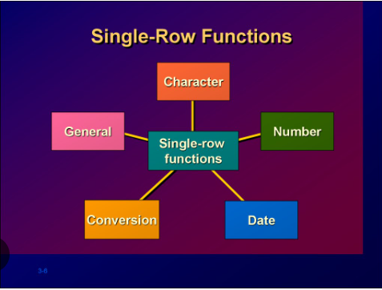
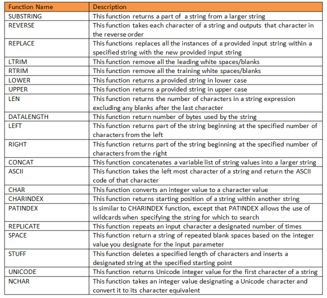
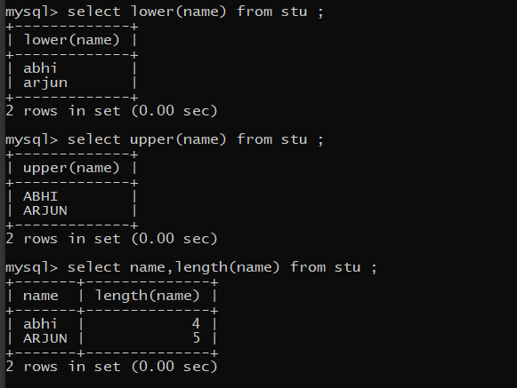
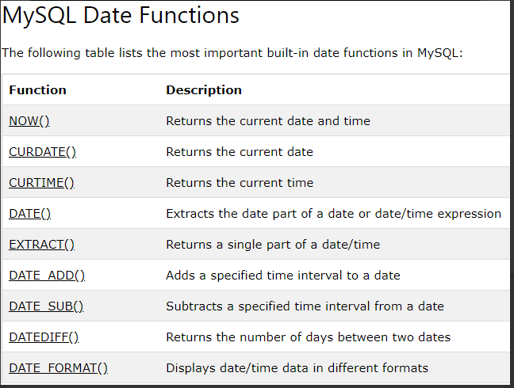
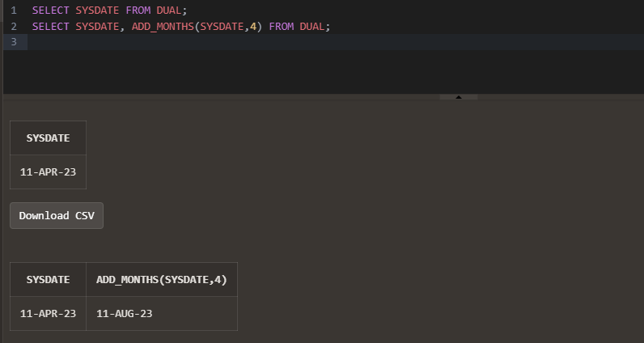
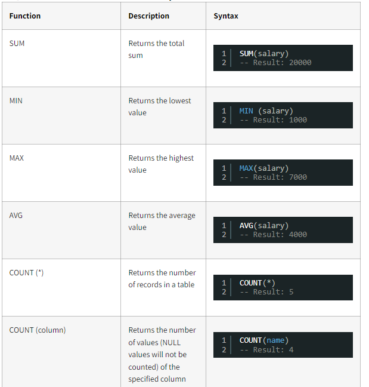

FUNCTIONS
There are three types of operators used in SQL, namely Comparison Operators, Logical Operators and Special Operators. These operators are used mainly in the WHERE clause, HAVING clause to filter the data to be selected.
Advantages of FUNCTIONS:-
(i) Functions can be used to perform complex calculations on data.
(ii) Functions can modify individual data items.
(iii) Functions can very easily manipulate output for group of rows.
(iv) Functions can manipulate character as well as numeric type of data.
(v) Functions can alter date formats for display.
Two types of FUNCTIONS:-
(i) SINGLE-ROW FUNCTIONS:-
These functions operate on single rows only and return one result per row. They accept one or more arguments and return one value for each row returned by the query. An argument can be a User-supplied constant, Variable value, Column name or an Expression. Single-Row functions can be used in SELECT, WHERE, and ORDER BY clauses
Syntax:-
function_name [(arg1, arg2,...)]
Where, function_name is the name of the function. arg1, arg2 is any argument to be used by the function. This can be represented by a user-supplied constant value, variable value, column name or an expression.

(1) CHARACTER function
Character or text functions are used to manipulate text strings. They accept string or character data as input and can return both character and numeric values.
Character functions can be divided into the following:
(a) Case-manipulation functions
(b) Character-manipulation functions

...................................................................................................
Example:-

(2) DATE function
Oracle database stores dates in an internal numeric format, representing the century. year, month, day, hours, minutes, and seconds. The default date display format is DD- MON-RR.
Date functions operate on Oracle dates. These are the functions that take values of DATE datatype as input and return values of DATE datatype as output, except for the MONTHS BETWEEN function, which returns a number as output.
Few date functions are as given below:

...................................................................................................
Example:-

(iI) MULTIPLE-ROW FUNCTIONS:-
Group functions operate on multiple rows or groups of rows and return one value for the entire group or table. Group functions are also called Aggregate functions, used to produce the summarized results. They operate on sets of rows and return results based on groups of rows. By default all rows in a table are treated as one group.
In SQL, Group functions can be categorized as:
• COUNT()
•SUM()
• MAX()
• MIN()
• AVG()
